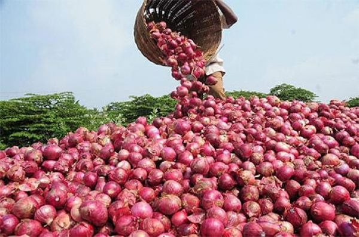

Sweetness is the red onion’s greatest strength. The sharpness of its flavor and the intensity of its smell are slightly more potent than that of the white onion, but the sugar content is much higher. That natural sweetness makes them a prime candidate for pickling, which we love to do when tacos, pizza, or fried rice are involved. The other obvious draw to a red onion is its color. That deep red hue provides a nice variety in color that other onions don’t. And when it comes to grilling, red onions are our first choice. Cut into wedges, they char nicely on the grill, and their interior texture goes jammy, instead of mushy, like white and yellow onions tend to do.